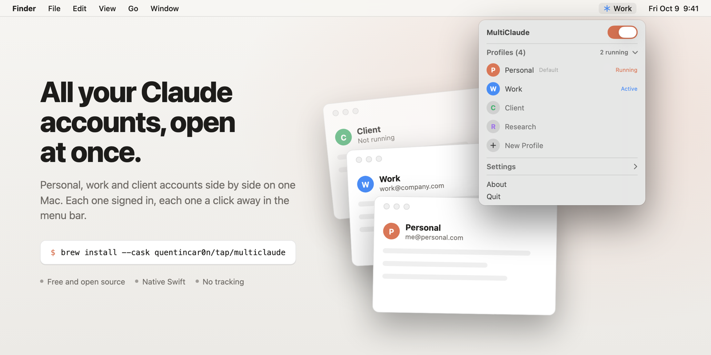
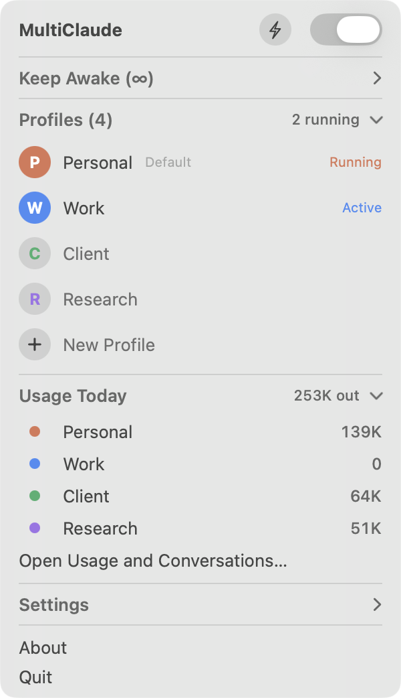
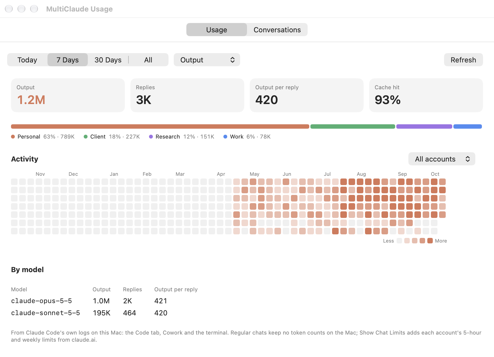

A free menu bar app for macOS. Run your personal, work and client Claude accounts side by side, see what each one uses, and keep every Claude Code conversation.
brew install --cask quentincar0n/tap/multiclaude
Plenty of people have more than one: a personal plan and a work seat, one organization per client, a test account. Switching means signing out, waiting for the email code and losing your place. Claude does accept a separate data folder per copy, and power users wire that into shell aliases. MultiClaude is that trick with a proper interface.
| Shell aliases | MultiClaude | |
|---|---|---|
| Open an account | type its alias in a terminal | one click in the menu bar |
| See which accounts are open | no | yes, live |
| Tell accounts apart | every window has the same icon | a color and an app icon per account |
| Sign in with Google or SSO | lands in whichever window opened first | lands in the right window |
| After Claude updates itself | windows come back on the default account | each account reopens on its own |
| See what each account uses | no | per account and in all |
One panel to open, focus, quit and add accounts, plus a few things a Claude power user ends up wanting.
Each profile is its own Claude data folder, so sign-ins and chats never leak between accounts. New Profile is one line: type a name, press Return.
"Claude Work", "Claude Client" in Spotlight, Launchpad and the Dock, with Claude's icon in each profile's color. Open windows wear it too, in ⌘-Tab and Mission Control.
Google and SSO sign-in come back to the account that asked, with nothing to click first.
When Claude updates itself it relaunches on the default account. MultiClaude reopens each profile on its own.
Open Claude Code in Terminal signed in as that account, with its own config folder. Copy MCP servers from one account to another.
One bolt next to the switch. Until you turn it off or for 15 minutes to 24 hours. Close the lid and the screen goes off, sound mutes and chat apps pause until you open it. Handy for long agent runs.
Reverse a mouse and a trackpad separately, which macOS can't do on its own.
⌃⌥⌘M opens the panel, ⌃⌥1 to 9 jump to each account, ⌃⌥⌘A keeps the Mac awake.
Signed releases, checked daily, installed in the background. Your Claude windows stay open.
Claude Code logs every reply's tokens on your Mac. MultiClaude credits each session to the account it ran in, from the Code tab, Cowork or the terminal.


Claude Code deletes transcripts after 30 days by default. MultiClaude keeps a copy of each one under its account, as an APFS clone that takes no extra space while the original exists. Browse them with Claude's own titles, search, read any one and export it to Markdown. Repeated automated runs, like hooks calling claude -p, are hidden by default.
brew install --cask quentincar0n/tap/multiclaude
Get the zip from the latest release, unzip and move MultiClaude to Applications. It isn't notarized yet, so the first time, right-click it and choose Open.
MultiClaude picks up your default Claude account, your --user-data-dir aliases and any Claude-* folder. Click the ✳ in the menu bar.
No analytics, no account, nothing leaves your Mac except the daily update check from GitHub. Usage numbers and conversation copies stay on your Mac, readable only by you. It never modifies the Claude app.